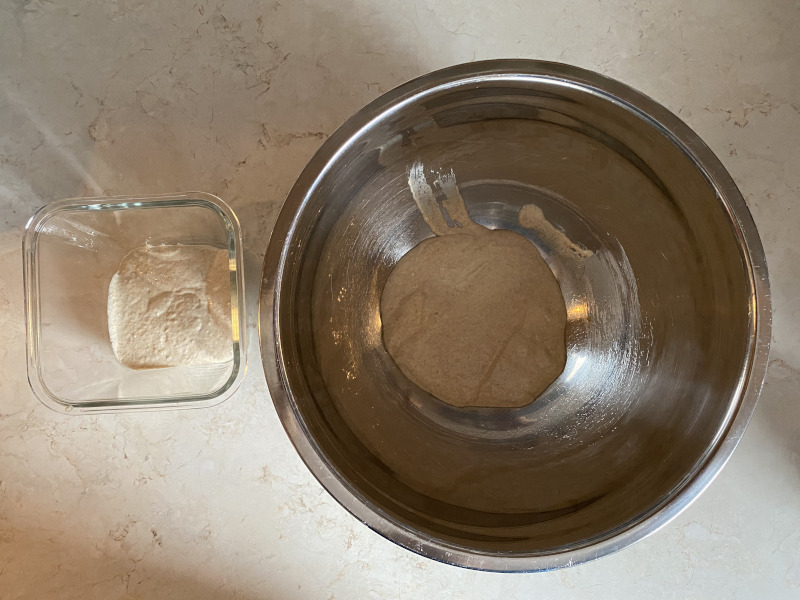
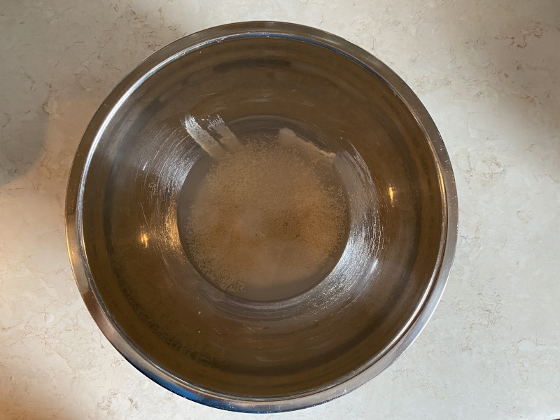
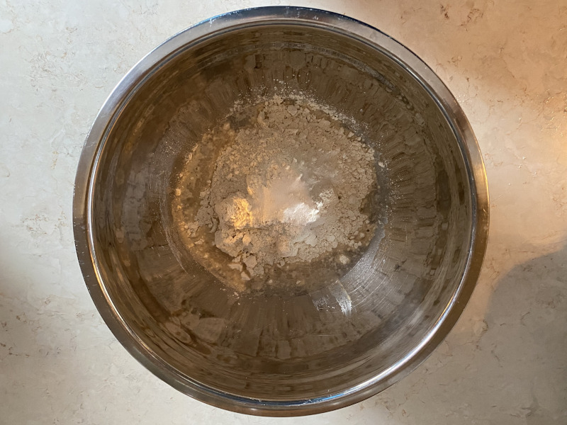
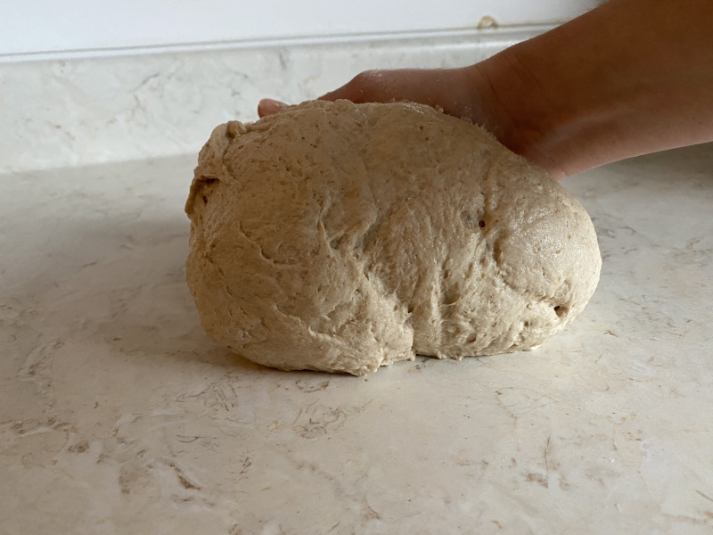
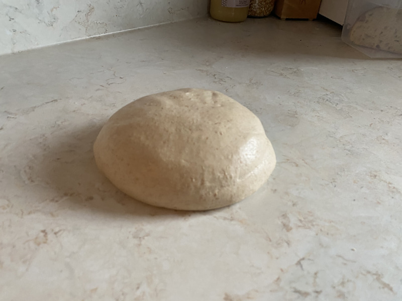
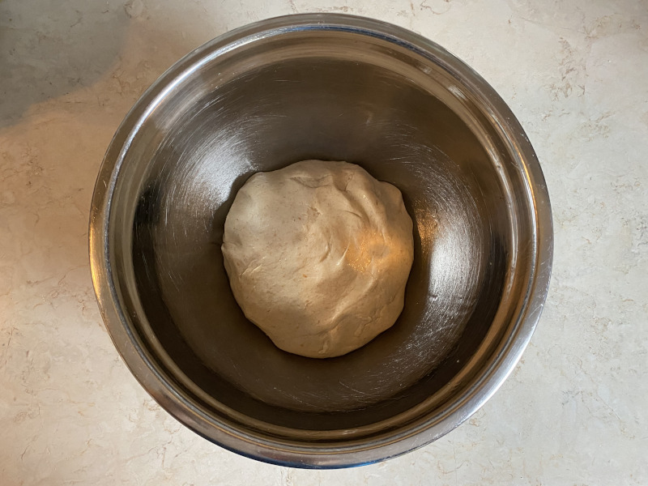
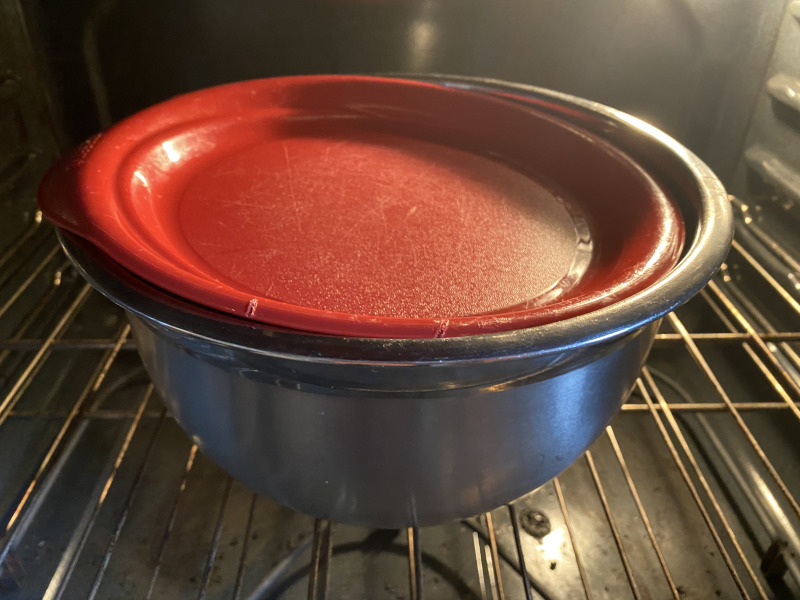
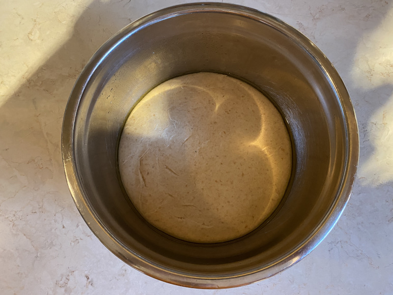

Pizza Dough
This is a slightly modified version of King Arthur Flour's Sourdough Pizza Crust that substitutes spelt for wheat.
Ingredients
- 1 cup (give or take) of unfed/discard sourdough starter
- ¾ cup lukewarm water
- rounded ½ tsp. instant or active dry yeast
- 2½ cups light spelt flour
- 1 tsp. salt
- A little olive oil
Directions
Once a step is complete, click its button to hide it.
- Turn your oven light on to create a warm place for the pizza dough to rise.
-
Separate your starter into two parts: one to feed and one for the pizza dough. You'll need
approximately one cup of starter for this recipe; put it in your largest mixing bowl.
 -
Pour the warm water over the starter and then sprinkle the yeast over it. (This will give the
yeast a bit of a head start.)
 -
Add the flour and the salt to the bowl.
 -
Mix everything together with your hands. It will initially look messy before forming into a
good dough.

-
The dough should feel slightly sticky but not really stick to your hands or the counter. Don't
be afraid to add a little more flour or water to get the right consistency.
 -
Knead the dough for 7 minutes. This is an excellent opportunity to work out any frustration
you've been feeling lately. The dough will become smooth and elastic.
 -
Grease your second-largest mixing bowl with olive oil using your hands. Lightly coat the
dough in oil as well, put in the bowl and loosely cover it.
 -
Loosely cover the bowl, put it in the oven and leave it there for 3-4 hours.
 -
The dough will increase in size and become softer. It's now ready to use.
